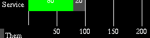
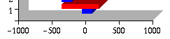
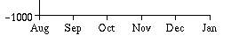
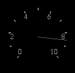
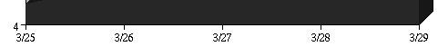

[Index]
[Introduction]
[Installation]
[Package]
[Component]
[Chart]
[Utility]
[Applet]
[Appendix A]
[Appendix B]
[Appendix C]
[Appendix D]
[API]
Axis Systems
In JavaChart, all Axis classes
implement AxisInterface,
and all Axis subclasses are children of the Axis superclass. This class
provides a number of useful methods to draw, label, and scale axes. By
making selective use of Axis' utility methods, and extending or modifying
other methods, Axes can take a variety of forms.
Axis utility methods:
-
scale - used to recalculate an Axis' internal values
-
drawGrids - draws an Axis' grid lines
-
drawLine - draws an Axis line
-
drawTicks - draws major and minor tick marks
-
drawLabels - draws individual axis labels, and the axis title
-
whereOnAxis - returns a pixel location of a specified element (tick mark,
etc.) at a specified interval. By overriding this method, one can alter
dramatically the behavior of drawLabels, drawTicks, etc.
-
getLabel - returns a label at a specified interval. By overriding this
method, one can make tremendous changes in the information an Axis communicates.
-
getMaxValsFromData, getMinValsFromData - retrieves maximums and minimums
from the Axis' array of Datasets.
Sample Axis: 
This axis retains the basic functionality of an Axis, but overrides calculation
methods (getMaxValsFromData) to retrieve the maximum sum of all dataset
values at a particular point. This is useful for charts that use StackBar
and Area components.
Sample StackAxis: 
HiLoAxes modify Axis caculation methods to consider Y2 values as well as
Y1 values.
Sample HiLoAxis: 
LabelAxis overrides the getLabels function to use an array of user-defined
labels, rather than automatically generated labels.
Sample LabelAxis: 
SpeedoCharts use a curved axis that has labels on the inside or outside
of the Axis. This Axis adds properties that define the shape and position
of the Axis, and overrides the drawTick, drawLine, and drawGrid methods
to create this visual variant.
Sample SpeedoAxis: 
A DateAxis is a fairly large and complex subclass that re-uses drawing
functions, but changes the interval and boundary calculations dramatically.
This Axis adds several properties to determine whether an axis will use
hour, minute, month, year, etc. labels, and adds a number of methods to
combine these labels strings in a reasonable way. This class overrides
the scale, getLabel and whereOnAxis methods.
Sample DateAxis: 
[Index]
[Introduction]
[Installation]
[Package]
[Component]
[Chart]
[Utility]
[Applet]
[Appendix A]
[Appendix B]
[Appendix C]
[Appendix D]
[API]